Learning to Allocate Incentives for Incentivized Advertising via Offline Model-Based Reinforcement Learning
这篇论文研究「先向用户承诺奖励、后观测广告收入」的激励广告分配问题。作者为 Zilin Zhao、Han Yang、Tianpei Yang 等，第一作者主要机构是南京大学软件新技术国家重点实验室，合作机构包括字节跳动与香港科技大学。论文于 2026-08-28 提交到 arXiv:2608.28065；本轮未核验到独立官方实现，PDF 中仍有会议名、年份和 DOI 占位符，应把它视为工业预印本而非已定稿会议版。
平台在不知道本次邀请能否产生广告曝光、也不知道后续 RTB 收入的时候，就必须先承诺激励金额：金额太低会丢失变现机会，太高又会侵蚀净利润，而且当前奖励还会改变用户在后续几次尝试中的期待与参与意愿。
[toc]
1. 背景和问题
1.1 激励广告的业务时序
普通信息流广告已经有一个可售曝光，广告主侧的自动出价是在这个曝光上竞争。激励广告则处在更上游：平台先给用户展示「看完广告可获得奖励」的邀请，用户接受后才触发广告请求和 RTB，曝光完成后才结算已承诺的奖励。若用户不接受，当轮没有曝光、没有广告收入，也没有激励支出。若接受但未看完，平台已可能获得 RTB 收入，但奖励只在完成时支付。因此，「曝光」、「完成」与「收入」不能合并为一个简单转化标签。
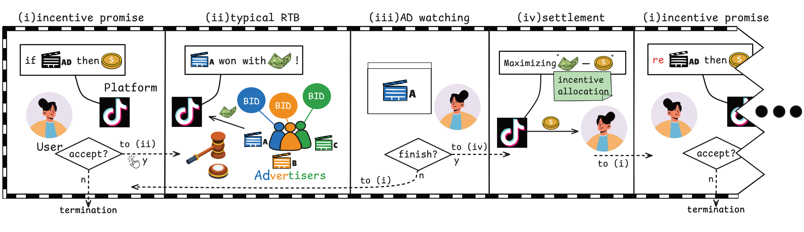
Figure 1 应按时间从左到右读。第一格是策略输出绝对奖励金额，用户可以接受或拒绝；第二格只在接受后发生，广告主参与 RTB，这一步决定平台实现的广告收入；第三格把广告展示给用户，完播与否决定激励是否真正支付；第四格结算后再进入新一轮。这张图支持的不是「出价越高收入越高」，而是一个两道门控的期望回报：奖励先影响曝光是否产生，再影响完成概率和支付；RTB 收入则来自已经进入广告链路的请求。也正因为这个时序，论文无法直接套用广告主侧的自动出价问题。
它也不等同于普通优惠券或补贴分配。促销系统往往在已存在的用户需求上优化转化、留存或 LTV；本文的奖励首先决定是否创造一次可变现曝光，之后才出现收入。所以目标不能只是接受率或完播率，而必须把广告收入与实际支付的激励成本放在同一个回报中。
1.2 从单步反应到短窗序列决策
单次预测还会忽略用户的局部记忆。论文把一个连续激励会话定义为 episode，最多包含产品限制下的 6–20 次尝试，大约一小时。当前激励可以让用户进入短暂兴奋状态，也可能积累疲劳或抬高之后的奖励期待。任意一次未产生曝光的尝试会因冷却机制终止该 episode；否则继续到上限。这个设定既不是无限期用户价值优化，也不是每次请求互相独立的 contextual bandit。
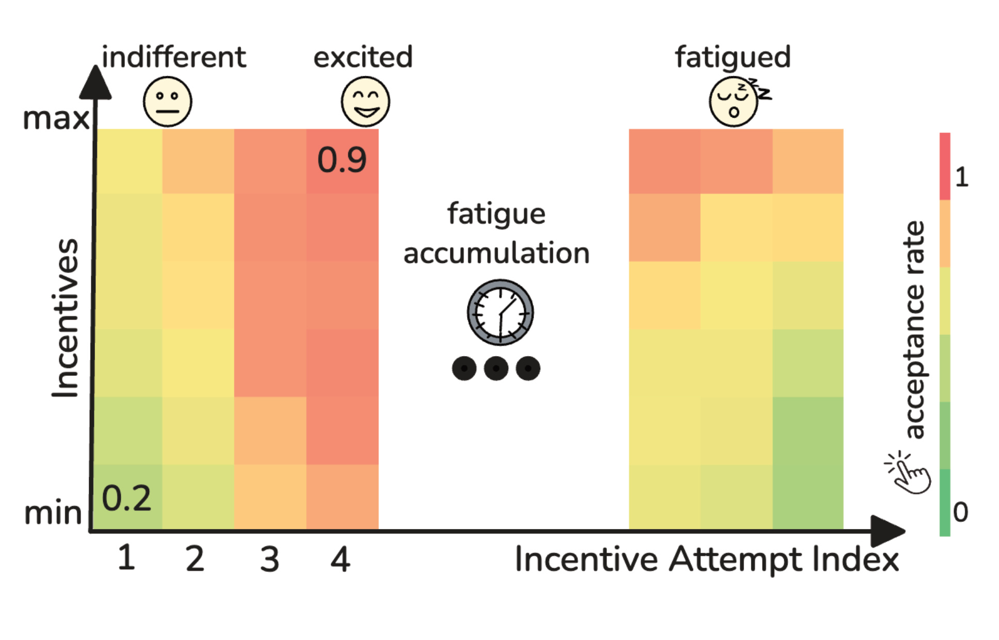
Figure 2 用 100 个随机用户的真实轨迹聚合出一个直观模式。纵轴是激励金额，横轴是连续尝试序号，颜色表示接受率。用户在第一次邀请前往往较冷淡；一旦接受，中间几次可能进入更高的点击倾向；继续刺激后，疲劳累积又使意愿下降。图中的热度块并不证明每个人都遵循同一曲线，但它说明「同一金额在第一次和第四次的效果可能不同」。这就是把近期行为、会话位置和立即反馈放入实时状态，并让当前动作通过下一状态影响后续收益的经验根据。
工业场景下直接在线探索代价太高：未收敛策略一方面真金白银支付激励，另一方面让用户感知的奖励频率和金额发生波动。离线 RL 可以避免这种探索，但日志只覆盖历史配送和预算控制选过的动作。策略若偏离这个支持域，价值函数和反事实评分器都可能过度乐观。论文的核心正是把「结构化世界模型补充局部转移」与「保守正则抑制模型利用」绑在一起，再用独立评分器做上线前筛选。
还有一个容易混淆的口径：本文的净利润是短窗内广告收入减去完成后实际支付的激励，不等于用户全生命周期价值。平台可以在外层以预算上限和配送目标管理总支出，策略内部则学习在相似成本附近把钱分给哪些请求。因此评价必须同时看成本对齐、收入变化、净利润和长期监控，不能用接受率或曝光量的单项上升替代业务价值证据。
这也决定了三条基线不能互换概念：DESCN 代表单步因果推断式分配，TD3+BC 与 IQL 代表不含世界模型的 plain offline RL，MB IQL 才是把世界模型生成转移、保守价值约束与 IQL 骨干结合的 Offline-MBRL。后面的线上结果是按时间顺序对这些策略做配对替换，不是同一时刻的全排列横评。
2. 方法
方法由四个相互约束的部分组成：短窗 MDP 定义目标，结构化世界模型产生局部虚拟转移，混合数据上的保守价值学习防止策略钻模型误差，独立 CES 把候选策略映射为与线上一致的每用户 KPI。世界模型不是在线规划器，CES 也不是 Actor；服务时只由 Actor 读取可在线获得的状态并输出奖励。
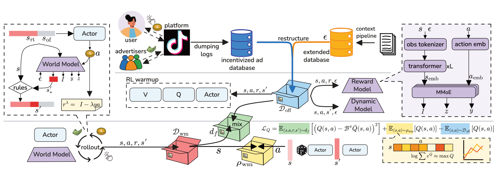
Figure 3 的上半部分是数据和模型边界。应用日志组成离线转移集，请求上下文 $\epsilon$ 通过时间戳遮罩在离线联表后进入 WM 和 CES，Actor 仍只接收 $s$。中部的 WM 预测曝光、完成、收入和可变状态，Actor 在它上只滚动一步，得到虚拟转移。下半部分把真实与虚拟转移混合给 critic，另用 WM 诱导的候选动作构造保守缺口；Actor 更新仍由真实日志上的行为克隆项拉住。右侧 CES 使用留出用户的真实请求来比较 checkpoint，不参与策略梯度。因此图中有三种不同的「模型」角色：生成局部转移的 WM、学价值的 critic、以及只做上线前排序的 CES，三者不应混为一个端到端预测器。
图中箭头还表明线上路径没有 WM 和 CES 的循环调用，这对估算服务延迟和排查特征泄漏很重要。
2.1 短窗序列 MDP 与成本敏感回报
每个转移 $(s_t,a_t,r_t,s_{t+1})$ 对应一次激励尝试。状态分成近期行为、会话信号和即时反馈组成的高频 $s_t^{rt}$，以及用户属性、长期活跃和历史广告反应组成的日/周级 $s_t^{of}$。动作 $a_t$ 是绝对激励金额。事件间隔并不均匀，所以论文用墙钟时间的半衰期折扣：
符号解释：$\Delta\tau_t$ 是两次连续尝试的实际时间差，$T_{1/2}$ 是半衰期超参，$\gamma_t$ 是当次跨越时间间隔的折扣。当间隔固定时它退化为标准常数折扣；间隔越长，上一动作对后续回报的权重越小。实验使用 15 分钟半衰期，这一值属于本产品短窗设定，不应直接移植到更长的用户生命周期。
设 $z_t$ 表示是否产生曝光，$y_t$ 表示是否完成并支付，$I_t$ 是该尝试的 RTB 收入，有 $y_t\le z_t$。实现奖励是
符号解释：$I_t$ 已经含有曝光门控，因此无曝光时为零，不再额外乘 $z_t$；$y_ta_t$ 是只在完成时支付的成本；$\lambda$ 是对成本的业务权重。$\lambda$ 不是预算上限本身，而是产生一组不同成本偏好候选策略的拉格朗日式标量；真正的预算上限和风险约束仍由外层配送系统执行。
2.2 结构化用户反馈世界模型
世界模型被分为奖励模型与状态动力学模型：
符号解释：$\widehat R_\mu$ 以参数 $\mu$ 估计用户反馈和收入，$\widehat P_\nu$ 以参数 $\nu$ 估计下一状态的可变部分。分开建模使业务结构进入目标：不是直接回归一个经验回报，而是保留曝光、完成、收入的因果顺序。奖励模型的三个头为
符号解释：$\epsilon$ 是在动作选择前已存在、但只在离线联表中可见的请求上下文；第一头估计曝光门，第二头只在 $z=1$ 样本上估计条件完成，第三头也只在曝光样本上估计条件收入。这避免把「无曝光必为零」与「有曝光后的收入长尾」混在一个回归任务里。它们隐含的单步期望奖励是
符号解释：第一项是「产生曝光」概率乘「曝光后收入」，第二项是「曝光且完成」概率乘奖励金额，再由 $\lambda$ 加权。生成转移时不直接用这个期望值，而是先依次采样曝光与完成，无曝光就将收入设为零，再按上一公式计算样本奖励，从而保证 $y\le z$。
状态模型只预测高频实时状态中真正会被当前互动改变的子向量：
符号解释：$s'_*$ 是 $s'^{rt}$ 中的可变字段；分类字段学条件分布，回归字段可预测确定性均值。完整下一状态由预测字段、不变字段和业务规则重组，比端到端生成全部特征更容易识别错误来源。奖励模型和动力学模型是独立的 MMoE 子网络；收入可用针对零膨胀长尾分布的 ZILN 损失。 关键边界是 $\epsilon$ 无法用于未来合成请求，也无法被线上 Actor 读取；因此论文只做一步滚动，而不把 WM 当成可长轨迹外推的用户模拟器。
2.3 混合转移与保守策略优化
训好 WM 后，从日志状态出发生成一步虚拟转移。真实数据与模型数据的训练分布为
符号解释：$d_{\mathrm{off}}$ 是日志转移的经验分布，$d_{\mathrm{wm}}$ 是 WM 生成转移的分布，$f$ 是真实数据比例。实现中先用真实数据预热 20 万步，再把合成比例逐步增至最高 0.5，每 100 个优化步刷新一次滚动。这使模型数据主要补充日志附近的局部信号，而不是在训练初期就主导价值估计。
但仅混合数据仍会让 critic 偏爱 WM 中被过估的动作。实现目标在各自的 TD3+BC 或 IQL 价值损失上加入保守项：
符号解释：$\tilde a$ 分别来自均匀提议、当前状态 Actor 附近的扰动提议，以及下一状态 Actor 附近的扰动提议；$-\log q(\tilde a)$ 校正不同提议密度，$T$ 是 log-mean-exp 温度，$\beta$ 控制悲观强度。正项压低 WM 候选中的高 Q，负项用真实日志动作防止全局价值一起塌缩。这里的候选分布与前面的 $d_f$ 异职：前者定位需要保守控制的动作，后者为 Bellman/期望分位值学习提供转移。
Actor 没有被改成规划器，MB-TD3+BC 保留原策略更新，MB-IQL 使用确定性 IQL+DDPG+BC 提取：
符号解释：$B_{\mathrm{off}}$ 只含真实日志对，第一项通过 critic 改进策略，第二项将动作拉回行为支持域；$\alpha$ 调节改进强度，$|Q|_B$ 是批内平均绝对 Q 值，$\operatorname{sg}$ 停止该尺度反传，$\delta$ 防止数值不稳定。合成数据只通过 critic 改善学习，BC 约束仍依靠真实动作，这是方法把「利用模型」与「防止利用模型错误」对冲起来的关键。
2.4 独立 CES 的上线前筛选
CES 与 WM 预测相同的三个请求级目标，但它是独立训练的数据集级评分器。日志按用户互斥分成训练与测试；对留出用户的每个真实请求，保留 $(s,\epsilon)$，用候选 Actor 输出替换日志动作，然后先在用户内求和、再对用户平均：
符号解释：$U_{\mathrm{test}}$ 是留出用户集，$T_u$ 是用户 $u$ 的固定真实请求，$x_{u,t}^{\pi}=(s_{u,t},\pi(s_{u,t}),\epsilon_{u,t})$。$\widehat R$ 与 $\widehat C$ 分别对应每用户收入与成本，$\lambda_{\mathrm{eval}}=1$ 时 $\widehat J$ 是每用户净利润。先用户内求和是为了对齐线上 KPI，而不是让请求数多的用户拥有更高单条样本权重。
这个评估不会让候选策略递归改变之后的状态、请求数和流量构成，所以它不是完整长时域 OPE，也不是线上 KPI 的无偏估计。为了让算法比较不变成「花更多奖励换更多收入」，对每个算法都从 $\lambda\in\{0.5,0.6,\ldots,2.0\}$ 的候选中选择 CES 成本最接近日志事实成本的策略：
符号解释：$\Pi_m$ 是算法 $m$ 的候选策略集，$C_{\mathrm{fact}}$ 是同一留出用户和请求上日志动作的事实成本。选择只看成本距离，选完才报净利润，从而降低按估计利润直接挑 checkpoint 导致的二次过拟合。线上还有预算上限、活动周期与实时风险控制，因此 CES 只是筛选护栏，不是部署决策的唯一来源。
3. 实验结果
3.1 数据、训练和比较口径
工业离线实验包含 DY-1、DY-2 和 DH 三个环境，分别来自不同服务时期、应用和历史策略。所有数据按用户互斥分割，每个配置跑 3 个随机种子，每个种子独立训练 CES，报告三条完整评估管线的均值和样本标准差。政策训练 100 万步，全局 batch size 为 1024，使用 4 或 8 张约 32GB 显存的 GPU。
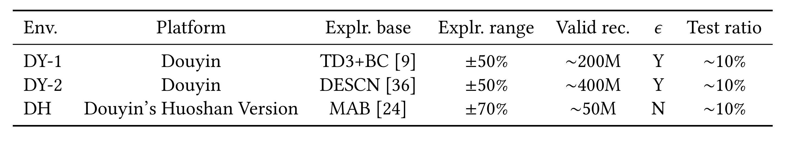
Table 13 显示 DY-1 与 DY-2 来自抖音，DH 来自抖音火山版；过滤后有效转移约为 2 亿、4 亿和 5000 万。它们的行为策略分别是 TD3+BC、DESCN 和 MAB，请求级随机探索区间为基线奖励的 $\pm50\%$、$\pm50\%$ 和 $\pm70\%$。这些探索带是离线识别的根基：数量大不等于任意动作都有覆盖，一个极端策略仍可能离开历史支持域。另外，只有 DY-1 和 DY-2 具有请求上下文 $\epsilon$，DH 没有，这让跨环境一致改善更有参考价值，但数据未公开也限制了独立复现。
三个环境的测试比例都约为 10%，且作者说明用户级切分在随机种子之间固定；因此表中规模支持高精度估计，却不会自动消除时期、应用和行为策略差异。
3.2 成本敏感性与预算重分配
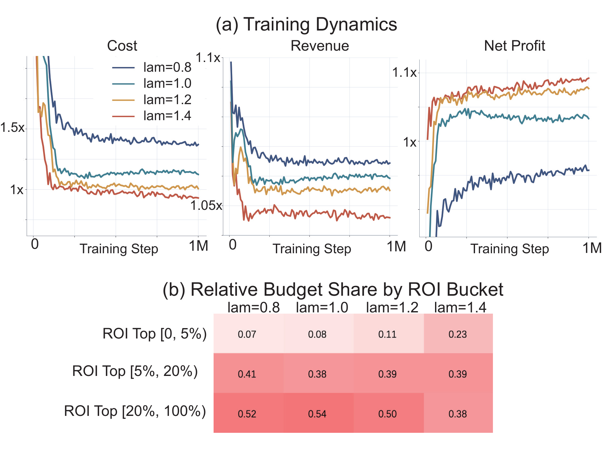
Figure 4(a) 中，$\lambda$ 从 0.8 增加到 1.4 时，归一化成本与收入都下降，而净利润在 DY-2 这个环境中升高。这不是一个普遍单调定律，而是该环境在给定探索和用户组成下的经验现象。Figure 4(b) 给出更具信息量的解释：随着成本权重升高，预算从 ROI 较低的用户桶向高 ROI 用户桶转移。因此 $\lambda$ 不只是把所有人的奖励等比缩小，而是改变了谁获得预算。论文后续在可比成本附近挑选策略，比较的才是分配质量，而非单纯扩大补贴总额。
还要注意纵轴是相对量而不是绝对货币值，图中曲线只能支持方向与趋势判断，不能反推真实预算规模或用户单价。
分桶占比的变化也只是学得策略的结果解释，论文并未把 ROI 桶作为显式硬规则写入 Actor。
3.3 离线主结果：世界模型是否提供额外信号
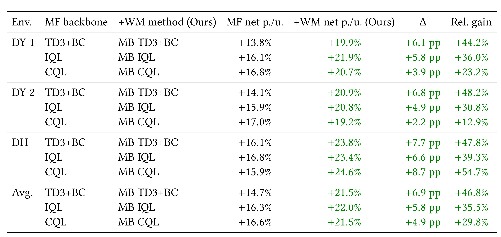
Table 1 的正确读法是在每个环境内配对比较。TD3+BC 在 DY-1/DY-2/DH 的 CES 每用户净利润相对值为 $+13.8\%/+14.1\%/+16.1\%$，加 WM 后是 $+19.9\%/+20.9\%/+23.8\%$；IQL 从 $+16.1\%/+15.9\%/+16.8\%$ 变为 $+21.9\%/+20.8\%/+23.4\%$；CQL 也在三个环境改善。平均绝对增量分别是 6.9、5.8 和 4.9 个百分点。这表明结构化用户反馈和收入模型在同一骨干上补充了价值学习之外的信号。但这些数值是 CES 对日志测试请求的局部反事实估计，不是三次独立线上收益，更不能与后面 7.96% 的特定 A/B 提升直接相加。
3.4 从线上因果推断、plain offline RL 到 Offline-MBRL
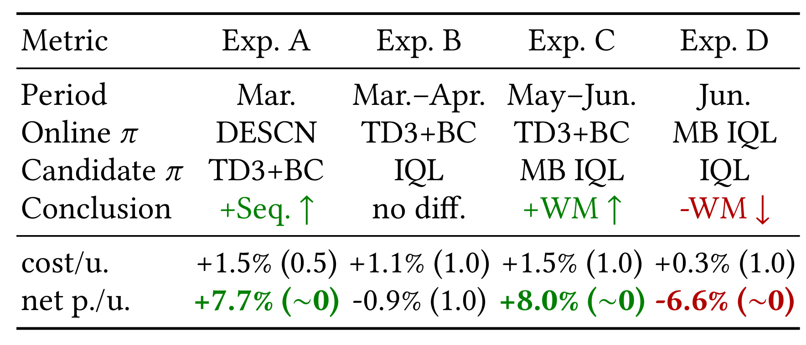
Table 2 是理解论文结论边界的关键。Experiment A 不是 Offline-MBRL，而是把单步因果推断策略 DESCN 替换为顺序的 plain offline RL TD3+BC，在成本无显著变化时每用户净利润提升约 7.7%。Experiment B 再将 TD3+BC 换为另一个 plain offline RL IQL，净利润差异不显著，证据只支持两种骨干在该时段大体持平。Experiment C 在 TD3+BC 基线上上线 MB IQL，净利润提升 7.9640%且 $p<0.0001$；这是本文对 Offline-MBRL 的主要线上证据。Experiment D 以已部署 MB IQL 为基线，撤掉 WM 回到 plain IQL，净利润反向下降 6.5550%，也是特定时间与流量下的反转试验，不是「所有 IQL 必然比 MB IQL 差 6.56%」。
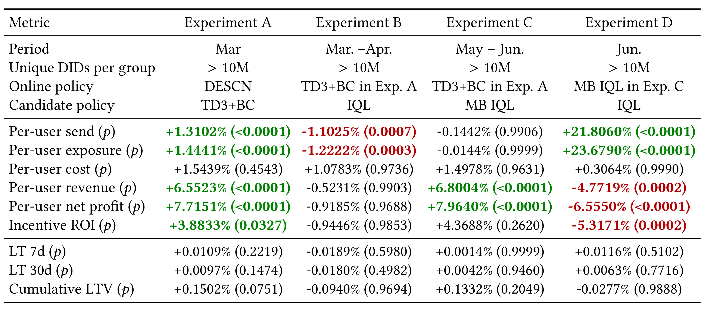
Table 12 解释了「曝光变多」为什么不等于「赚得更多」。Experiment C 中 MB IQL 的每用户发送和曝光几乎不变，成本也无显著变化，但收入提升 6.8004%、净利润提升 7.9640%，说明改善更像是把相近预算分配给广告价值更高的机会。Experiment D 则相反：plain IQL 的发送和曝光分别大增 21.8060% 和 23.6790%，成本仍无显著差异，但收入下降 4.7719%、净利润下降 6.5550%，符合预算被分散给大量低 eCPM 人群的事后解释。四次实验的 7 日 LT、30 日 LT 和累积 LTV 都没有显著变化，但「未检出」不等于证明长期无影响，尤其本方法优化的仍是短期净利润。
各组在峰值流量下都有超过一千万唯一 DID，并经历 0.1%、5% 到 10% 的逐步放量，故显著性来自大规模同期比较；这仍不能排除跨月份实验之间的环境变化。
3.5 CES 校准、请求上下文与支持域
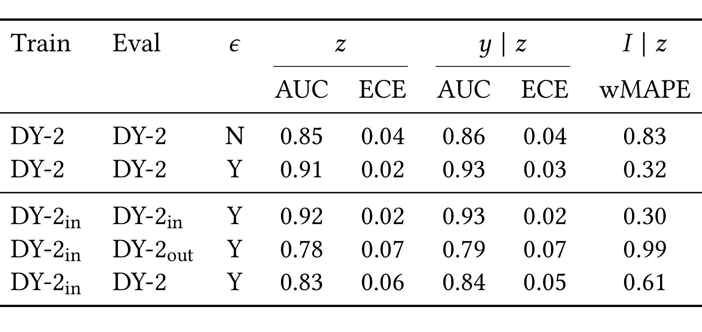
Table 3 首先显示，在完整 DY-2 上加入 $\epsilon$ 后，曝光 AUC 从 0.85 升到 0.91，条件完成 AUC 从 0.86 升到 0.93，条件收入 wMAPE 从 0.83 降到 0.32，说明在动作前已可见的请求信息对请求级预测很有价值。但第二组行更重要：只在 DY-2 中心 $\pm20\%$ 动作带训练 CES 时，它在带内表现很好，一旦评估带外 DY-2out，AUC 降至 0.78/0.79，收入 wMAPE 升至 0.99。因此 CES 能做的是支持域附近的候选排序，不能把一个窄带评分器当成全动作空间的真实环境。
ECE 也从带内的 0.02 增至带外的 0.07，表明问题不只是排序能力下降，概率校准也同时恶化；这会直接影响收入与成本的量纲估计。
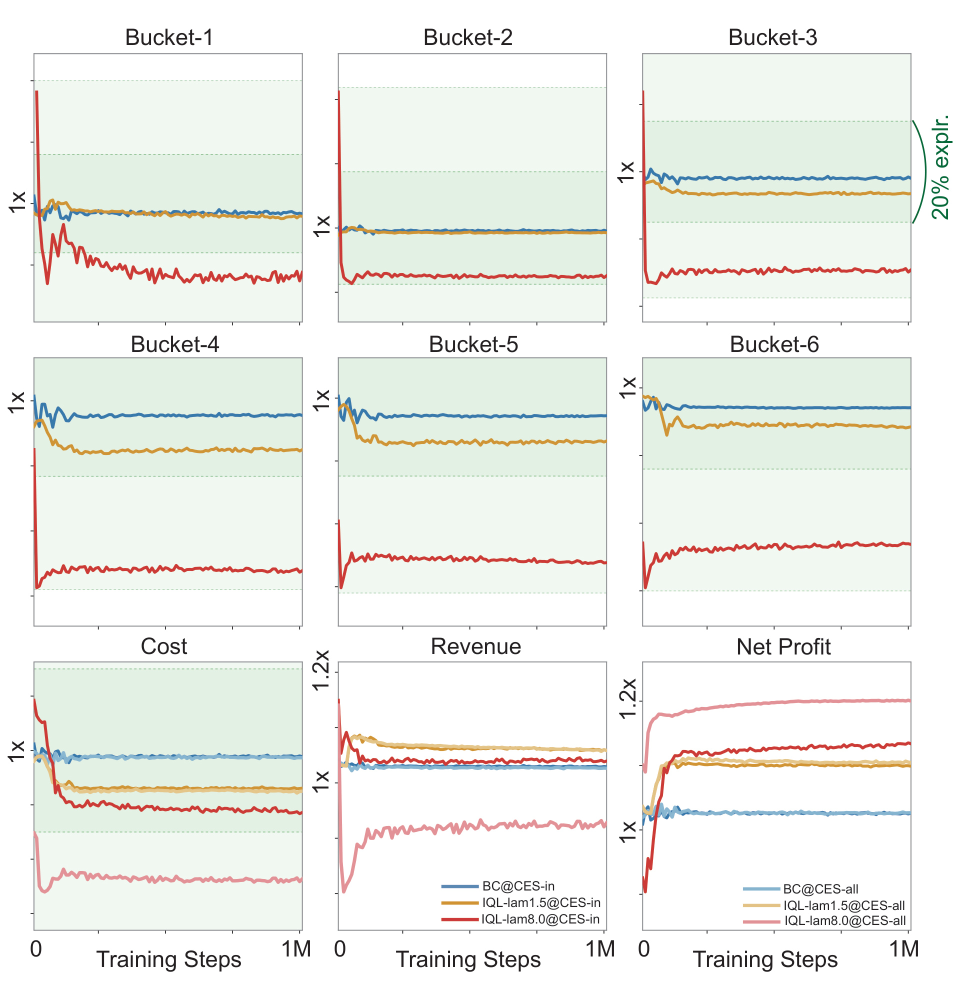
Figure 7 把这个边界变成策略级证据。作者在六个 eCPM 桶中比较 BC、$\lambda=1.5$ 的 IQL 和故意设得极端的 $\lambda=8.0$ IQL，并分别用中心 $\pm20\%$ 数据训练的 CESin 与完整 $\pm50\%$ 数据训练的 CESall 评分。BC 和正常 IQL 的动作保持在内层绿色带中，两个评分器在成本、收入、净利润上几乎一致；极端 IQL 在每个桶都进入内外带之间，两个 CES 开始分歧。这并非对每个 $(s,a)$ 的严格 OOD 检验，但足以证明为什么必须用 $\lambda$、BC 和保守 Q 正则共同限制动作漂移，也为「CES 只是局部筛选器」提供了可视化反例。
底部面板中 CESin 对极端策略同时高估成本和收入，但成本误差更大，最终反而低估净利润，说明 OOD 不必然总是乐观偏差。
3.6 世界模型为什么只滚动一步
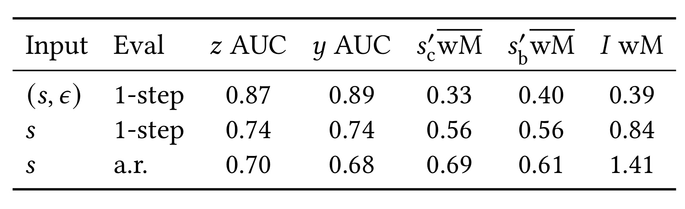
Table 4 同时比较了两个因素。使用已观测请求上下文 $(s,\epsilon)$ 做一步预测时，曝光和完成 AUC 为 0.87/0.89，两类可变状态 wMAPE 为 0.33/0.40，收入 wMAPE 为 0.39。拿掉 $\epsilon$ 以后，这些指标全部恶化；再把自己预测的状态递归喂回去，曝光/完成 AUC 降到 0.70/0.68，收入 wMAPE 升到 1.41。这组比较不说明 WM 在一步内完全准确，它说明请求上下文对本地预测重要，而未知的下一 $\epsilon$ 与状态误差会让长滚动迅速失真。
表中状态误差还分成 CPM 类和行为类可变字段，两组都随去掉上下文与自回归滚动恶化，排除了问题只集中在某一类业务特征的简单解释。
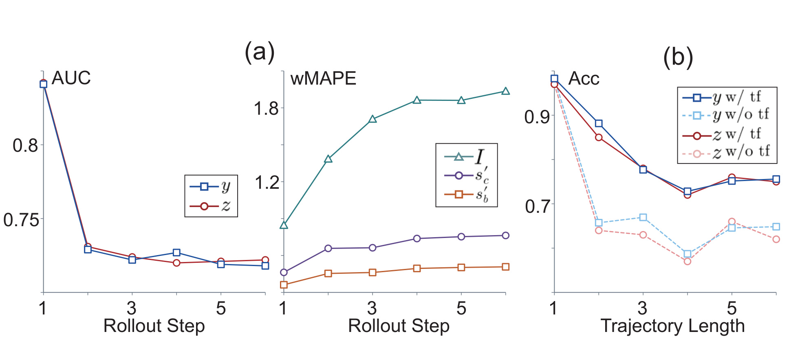
Figure 8(a) 按滚动步数聚合，曝光/完成的分类质量在第一到第二步就明显下降，收入和状态字段的 wMAPE 则上升；之后曲线可能变平，但那并不代表误差消失，而是模型已经进入较差区间。Figure 8(b) 按日志轨迹长度聚合：长度为 1 的 episode 通常对应首次尝试即未产生曝光，最容易预测；轨迹越长，即使使用真实前一状态的 teacher forcing，质量也会变差。因此一步滚动是证据驱动的偏差-方差折中：它获取反事实局部信号，却不声称可靠地模拟完整用户会话。
左图的多个指标在第 2 步前就出现主要降幅，意味着「只再多滚一两步」也不是无害的小修改；如果要扩展 horizon，必须重新解决下一请求上下文的生成与校准。
3.7 保守 Q 正则与模型误差的交互
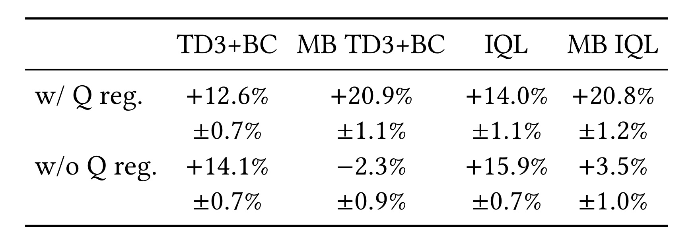
Table 5 揭示保守项不是对所有 offline RL 都普遍有利。在 plain TD3+BC 上，加正则使归一化 CES 净利润从 $+14.1\%$ 降到 $+12.6\%$；plain IQL 从 $+15.9\%$ 降到 $+14.0\%$。然而对模型增强版，无正则 MB TD3+BC 和 MB IQL 只有 $-2.3\%$ 和 $+3.5\%$，加正则后达到 $+20.9\%$ 和 $+20.8\%$。这个巨大反差符合方法动机：真实日志上额外的悲观会牺牲一些可用改进，但 WM 产生的动作-转移对给了 critic 一个直接利用模型误差的通道，此时定向压低高价候选是成功的必要组成。由于消融仍由 CES 评估，它支持模块相互作用，但不能独立排除 WM 与 CES 共享输入导致的相关误差。
3.8 序列建模与单步策略的参考比较
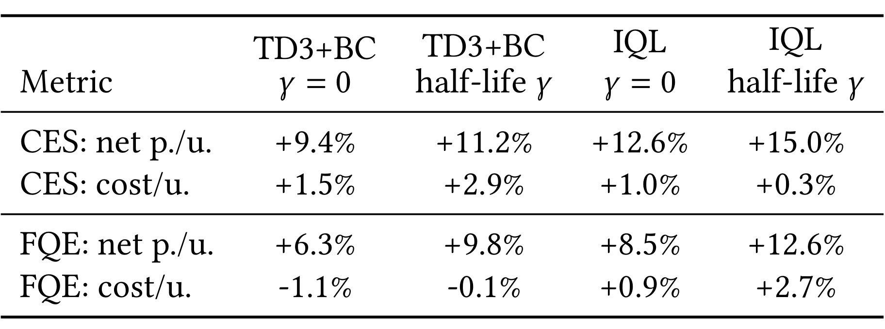
Table 8 把世界模型之外的「序列性」单独拿出。在 DY-2 公共参考评估上，TD3+BC 用半衰期折扣时 CES 净利润从 $+9.4\%$ 升到 $+11.2\%$，IQL 从 $+12.6\%$ 升到 $+15.0\%$；FQE 的净利润方向也一致。这组证据与 Experiment A 中 TD3+BC 相对单步 DESCN 的线上改善互补，说明把短窗携带效应放入回报有实用价值。但表中 CES 与 FQE 的成本变化不完全一致，且这只是同一环境上的参考比较，所以更稳妥的结论是「序列折扣在本数据中的排序更高」，而非宣称任意激励场景都必须用相同半衰期。
同时，半衰期版本并非总是保持更低成本；所以序列性的改善仍需经过前述事实成本对齐，不能只按原始策略分数挑选。
3.9 评估器复用的工程开销
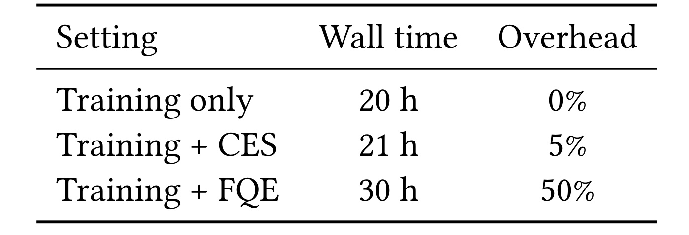
Table 10 在同一固定资源下比较三种设置：只训练策略需 20 小时；每个 checkpoint 加 CES 推理需 21 小时，边际开销 5%；加需为每个目标策略重新拟合的 FQE 需 30 小时，开销 50%。CES 数字不包含约 1 小时的单次数据集级冷启动，所以它描述的是「同一数据集上频繁比较许多 checkpoint」的工作流，而非首次评估的全成本。这个工程优势来自留出 Ray 数据集一次物化、大 batch Actor+CES 推理和评分器在策略间复用。它说明 CES 为什么适合训练中的高频筛选，但计算快并不会自动修复支持域偏差或相关模型误差。
比较使用同一八卡任务且评估是同步执行，没有用额外异步工作节点换取更短时间，因而开销口径在这一实验内是可比的。
3.10 公开基准只能作为可行性补充
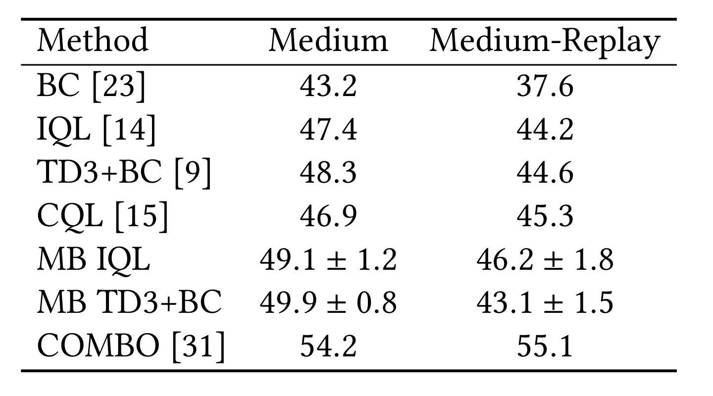
Table 14 将领域结构化 WM 换成标准 MLP 世界模型，在 D4RL HalfCheetah Medium 和 Medium-Replay 上测试通用扩展。MB IQL 从 47.4/44.2 升到 $49.1\pm1.2/46.2\pm1.8$；MB TD3+BC 在 Medium 从 48.3 升到 $49.9\pm0.8$，但在 Medium-Replay 从 44.6 降到 $43.1\pm1.5$。四个配对中有三个改善，说明混合转移和保守控制不完全依赖广告特征；但 COMBO 的 54.2/55.1 仍更高，而且 MB TD3+BC 并非稳定改善。D4RL 是长时域、直接观测标量奖励的控制环境，与激励广告的短 episode、曝光/完成门控和事后 RTB 收入差异很大，所以这张表最多支持「扩展在公开环境有一定可行性」，不能作为工业净利润结论的外部验证。
4. 总结
4.1 证据链与工程启发
这篇论文最有价值的不是单一算法名称，而是一条可审核的部署链：先用顺序 offline RL 代替单步因果分配，再比较不同 plain offline RL 骨干，接着加入结构化 WM 与保守正则，最后用撤掉 WM 的反转测试检查增益是否保留。其中 Experiment C 的 7.96% 每用户净利润提升与 Experiment D 的 -6.56% 反转共同支持本产品、本流量序列中 WM 增强的增量价值。这两个数字不能被外推为 Offline-MBRL 对所有广告、推荐或补贴业务的通用收益。
对推荐与广告工程的可迁移点有三个。第一，对「动作先改变机会是否出现、之后才出现价值」的问题，将门控、条件收入和状态转移分头建模，比直接拟合一个稀疏净回报更易测试。第二，离线上下文可以帮助 critic 与评估，但必须通过时间戳遮罩防止未来泄漏，并且明确不让 Actor 依赖无法在线获取的特征。第三，平台需要的不只是一个最终策略，还是一套可频繁排序 checkpoint、匹配成本、检查支持域并随时回滚的产品接口。
4.2 局限、风险与后续方向
局限至少有以下六点。第一，优化目标是短窗净利润，LT 和 LTV 只在线监控，「未显著变化」无法代替对长期奖励期待、用户疲劳和留存的直接优化。第二，CES 固定了真实请求集，不模拟策略如何改变之后的请求数和状态分布；它只是支持感知的局部排序器。第三，WM 和 CES 的输入与预测目标高度重叠，错误可能相关；一个在 WM 中被过估的模式也可能被 CES 二次过估。第四，三个工业数据集和完整服务系统不公开，预印本还有会议元数据占位符，外部团队很难重现特征、流量切分和线上实验。第五，请求上下文的行动不变性只通过残差相关和动作可预测性做经验检查，不是完整的因果识别证明。第六，一步 WM 是针对当前数据和产品时间尺度的折中，如果业务需要跨天预算、多会话留存或策略改变流量供给，现有建模会丢掉重要动力学。
后续可优先做四件事。其一，建立与 WM 架构、特征子集更独立的评估器，并用多评估器排序一致性、不确定性区间和线上小流量检查降低共模型偏差。其二，将支持域距离从 eCPM 分桶可视化提升到状态-动作级别的可审计指标，让每个候选策略同时交付 KPI 估计与支持风险。其三，在相同成本条件下把长期用户结果加入约束或多目标，并延长线上观测窗口，区分「当期净利润」与「奖励期待被改造后的长期价值」。其四，对世界模型做分布外压力测试和部署前回放，分别扫描滚动长度、合成比例、$\beta$、$\lambda$ 与不同历史探索带，验证收益是否依赖某个脆弱超参区间。这些方向比继续追求更大的单点线上涨幅更能回答方法能否安全迁移到其他激励型平台决策。